Configure Keycloak with external LDAP for abcdesktop
Prerequisites
- a Kubernetes cluster with abcdesktop installed
helmcommand line- an LDAP server
Note
In this example, we will use docker-test-openldap
Install
There are many ways to install a keycloak server, in this tutorial, we will perform a Kubernetes install on the same cluster hosting our abcdesktop using helm command line.
Note
If you are curious about other ways to get started, please refer to the keycloak documentation
Connect to your control plane and run the following lines to perform keycloak install
helm repo add codecentric https://codecentric.github.io/helm-charts
helm repo update
helm install keycloak codecentric/keycloak \
--namespace keycloak \
--set postgresql.enabled=false \
--set database.vendor=h2 \
--set service.type=NodePort
Once done, run the following command to check if the keycloak are running
kubectl get pods -n keycloak
NAME READY STATUS RESTARTS AGE
keycloak-0 1/1 Running 0 32s
Then check the keycloak service to see which port has been chosen for hte web UI
NAME TYPE CLUSTER-IP EXTERNAL-IP PORT(S) AGE
keycloak-headless ClusterIP None <none> 80/TCP 47s
keycloak-http NodePort 10.111.139.181 <none> 80:31846/TCP,8443:30806/TCP,9990:32562/TCP 47s
In my case, the port is 31846. You can now connect to http://<YOUR_MASTER_IP>:<YOUR_KEYCLOAK_PORT>
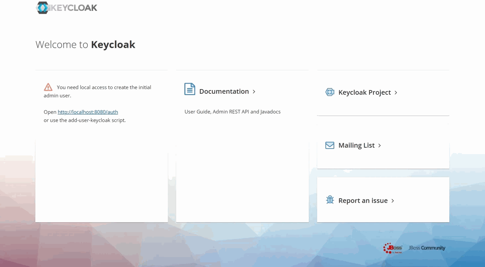
Create admin user
In order to access keycloak administration console, you should create an admin user locally, directly on the keycloak pod.
First open a shell inside the pod
kubectl exec -it keycloak-0 -n keycloak -- bash
Once inside, ru the following commands to create the admin user
# You can replace admin and admin123 by the credentials of your choice
/opt/jboss/keycloak/bin/add-user-keycloak.sh \
-u admin \
-p admin123
# Then reload keycloak
/opt/jboss/keycloak/bin/jboss-cli.sh --connect command=:reload
Now reconnect to the web UI, you should be able to connect and access admin console
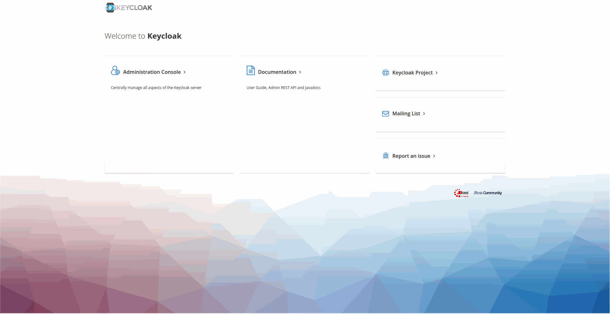
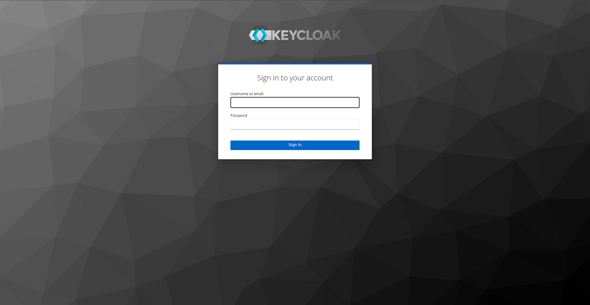
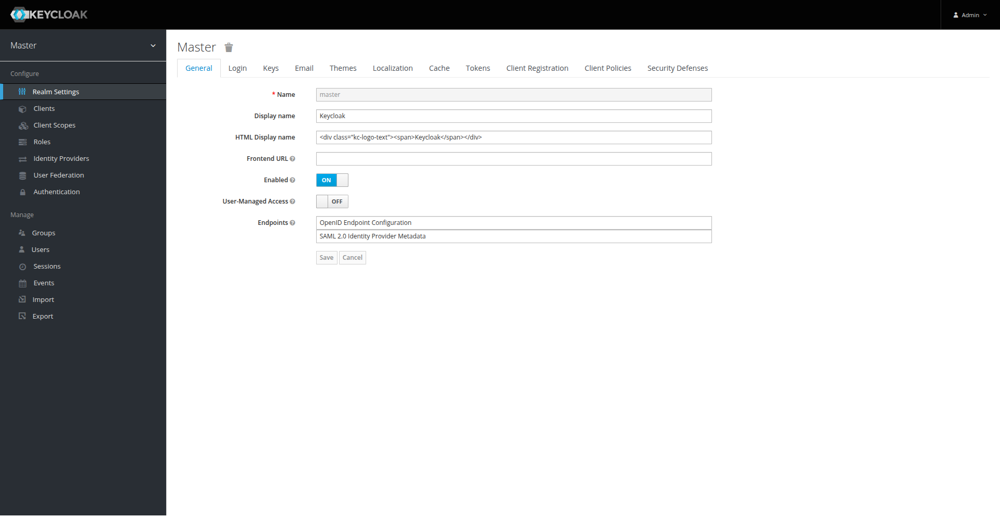
Import LDAP users
On the admin console, click on User Federation and then Add provider > ldap
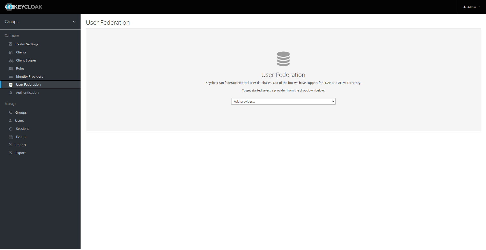
You can now fill the different fields according to your ldap configuration.
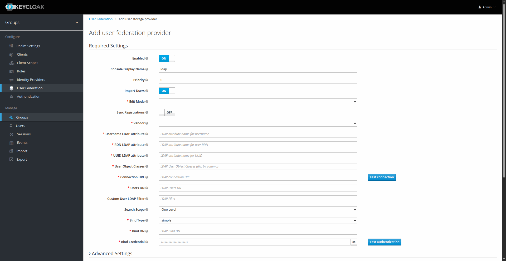
In our case, it will look like this
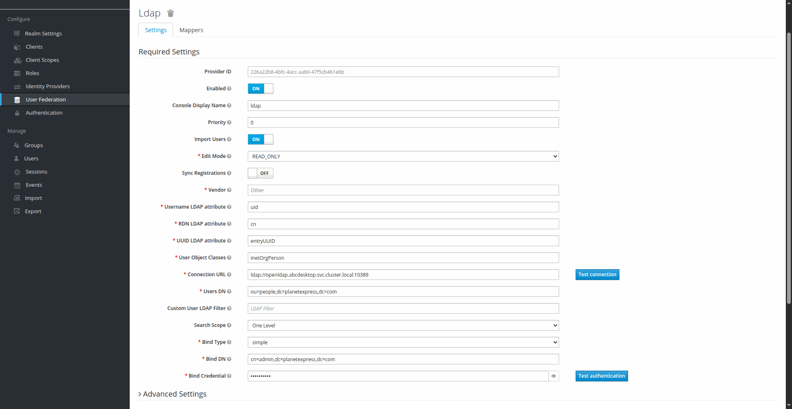
Once filled; click on Synchronize all users at the bottom, it should import your users. You can check it by going to the users page.
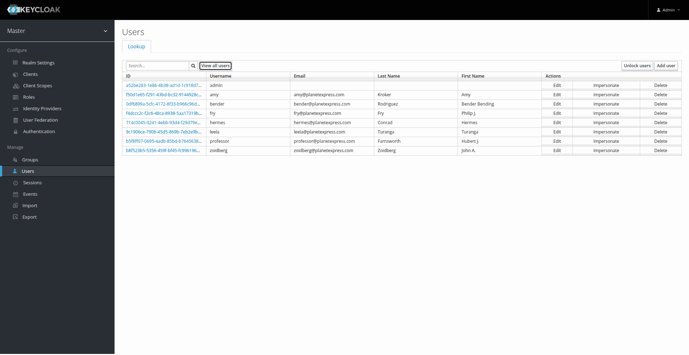
Add mappers to User federation (Optionnal)
By default, while importing users, keycloak only imports a few attributes for each user that are :
full namemodify dateemailcreation datelast nameusername
But, you may want to import other attributes from your LDAP server. To do so, you need to create some Mappers.
Go to Mappers tab on the User Federation page and create a mapper for each attribute you want to add.
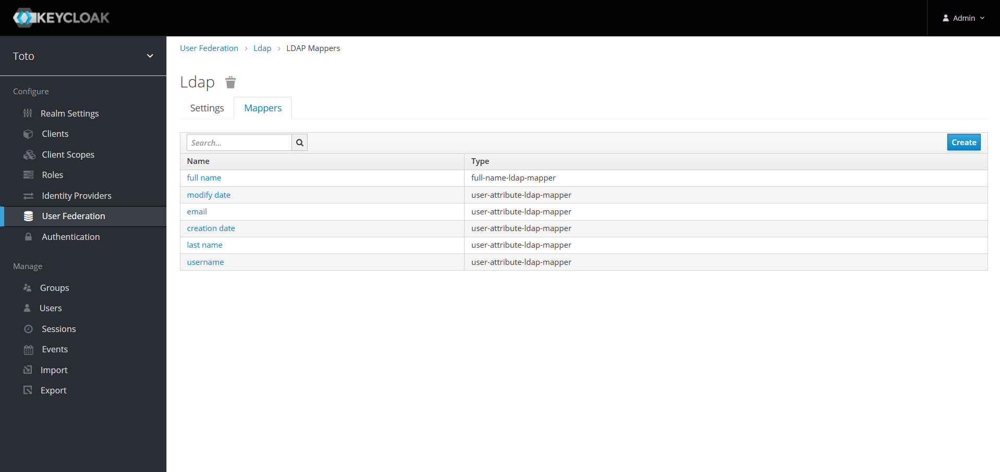
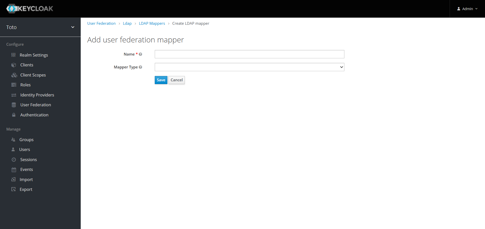
In our example we need to import user's groups and uid
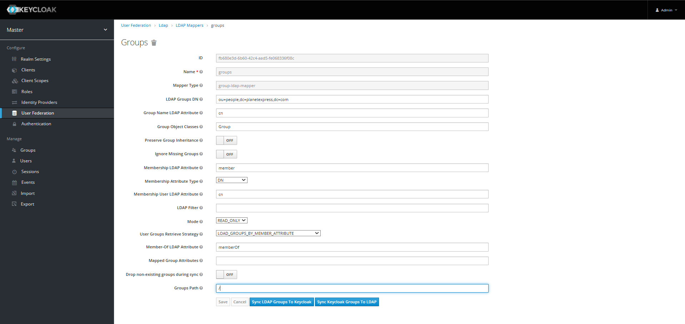
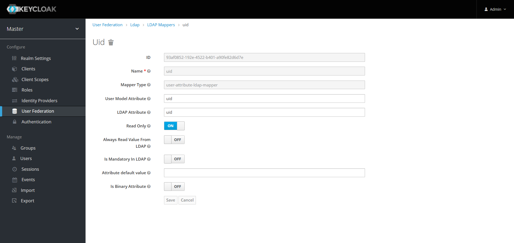
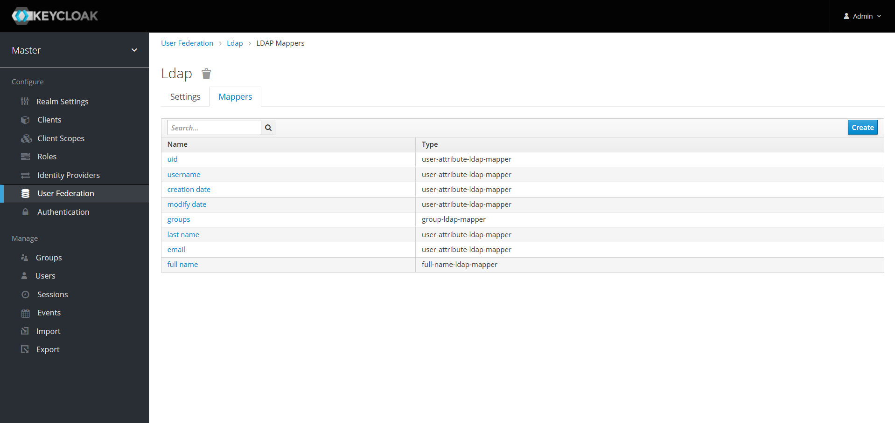
You can now check a user to see the updates
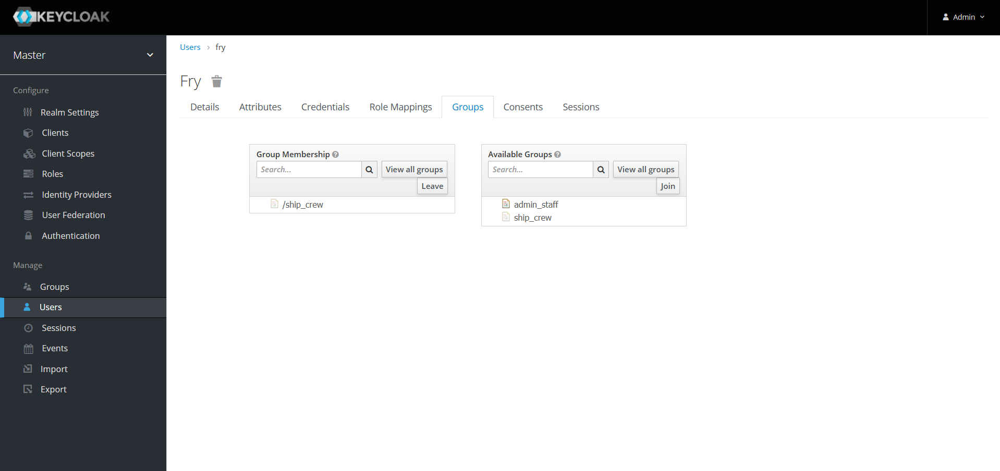
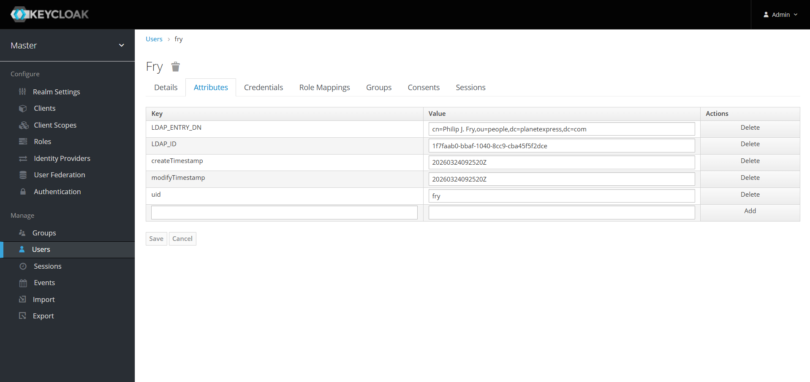
Create a client
In order to perform authentication with keycloak, we need to generate a client secret. For that go to the Client page and click on create. Fill the fields and save it.
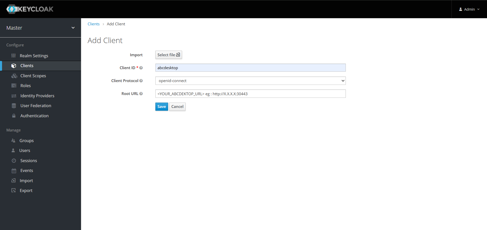
Now go to the Credentials tab and you should see your client secret.
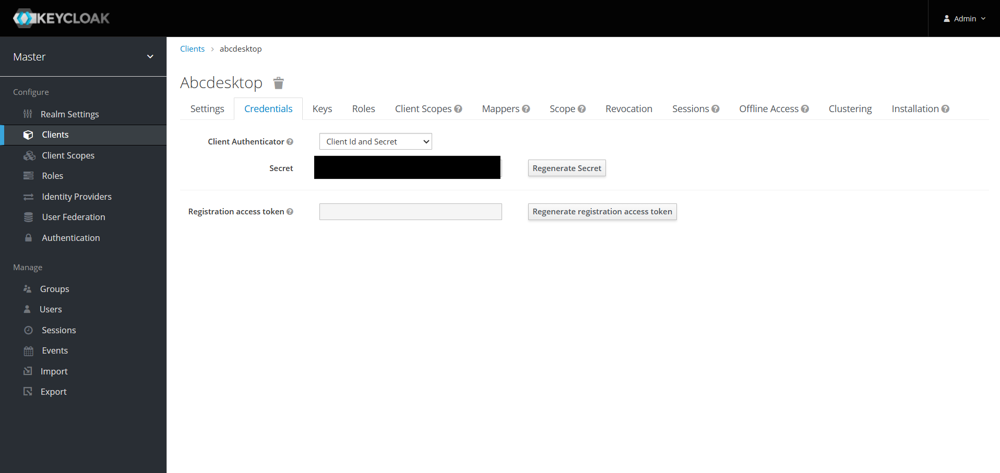
Info
If you added mappers at previous step, you should create the same mappers on the client.
show details
Go to the Mappers tab and create one mapper for each previously created mapper.
In our case, we need to create both client sides groups and uid mappers.
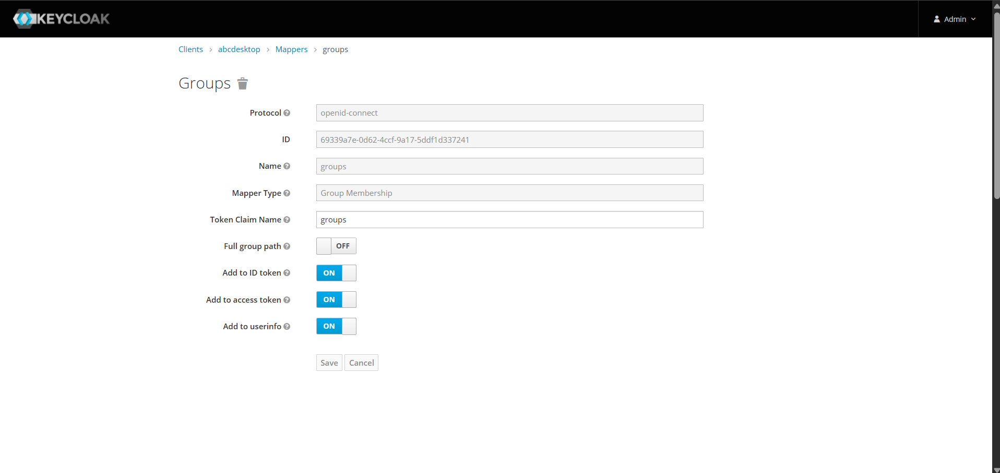
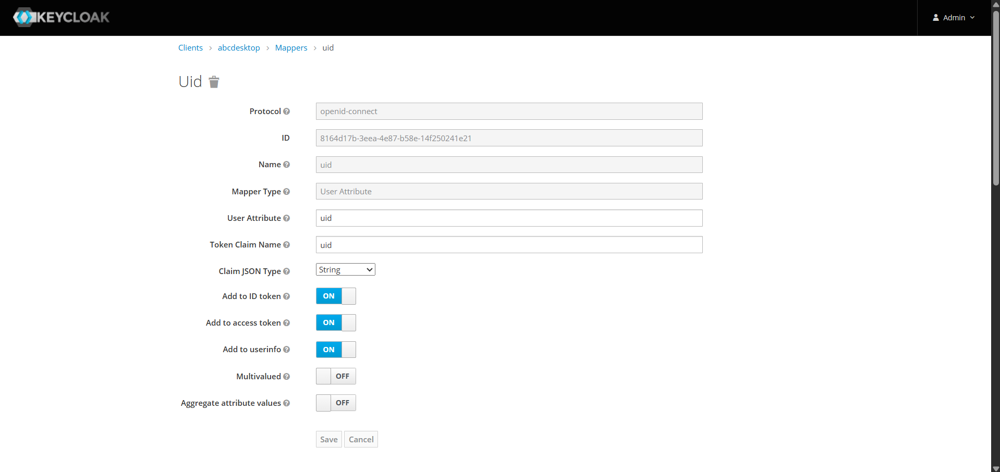
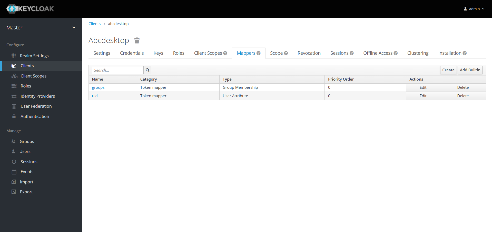
Update od.config file
Now you have to tell abcdesktop to use keycloak as an authentication provider. For that, you need to update the od.config file as explained on this page.
Restart pyos by running the following commands
kubectl create -n abcdesktop configmap abcdesktop-config --from-file=od.config -o yaml --dry-run=client | kubectl replace -n abcdesktop -f -
kubectl rollout restart deploy pyos-od -n abcdesktop
Now you can perform authentication with keycloak, let try to log in as fry.
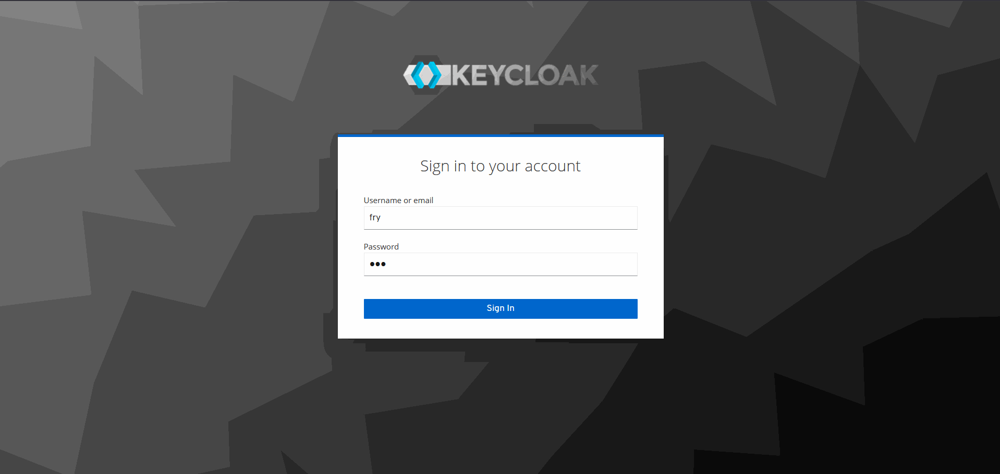
It should work and create your desktop. You can also check pyos logs to see which that keycloak is the provider that has been used.
kubectl get pods -n abcdesktop
NAME READY STATUS RESTARTS AGE
console-od-7f548d74fd-48rpv 1/1 Running 0 9d
fry-c3896 3/3 Running 0 2d23h
memcached-od-796c455cd-hqhlb 1/1 Running 0 9d
mongodb-od-0 2/2 Running 0 9d
nginx-od-6657dd8c9-c979g 1/1 Running 0 9d
openldap-od-6f4797f9d-86jdd 1/1 Running 0 9d
pyos-od-95789468f-9dl68 1/1 Running 0 2d23h
router-od-867f5576dd-p9hj5 1/1 Running 0 9d
speedtest-od-78cdbdd9c6-vphfl 1/1 Running 0 9d
kubectl logs pyos-od-95789468f-9dl68 -n abcdesktop|grep authservice
2026-04-02 13:42:52 test-pl-worker3 140187023907640 authservice [DEBUG ] oc.auth.authservice.ODAuthTool.login:anonymous pdr.authenticate provider=keycloak done
2026-04-02 13:42:52 test-pl-worker3 140187023907640 authservice [DEBUG ] oc.auth.authservice.ODAuthTool.login:anonymous pdr.getuserinfo provider=keycloak start
2026-04-02 13:42:52 test-pl-worker3 140187023907640 authservice [DEBUG ] oc.auth.authservice.ODExternalAuthProvider.getuserinfo:anonymous dump userinfo data={'sub': 'f4dccc2c-f2c6-48ca-8938-5aa17319b238', 'uid': 'fry', 'email_verified': True, 'name': 'Philip J. Fry', 'groups': ['ship_crew'], 'preferred_username': 'fry', 'given_name': 'Philip J.', 'family_name': 'Fry', 'email': 'fry@planetexpress.com'}
2026-04-02 13:42:52 test-pl-worker3 140187023907640 authservice [DEBUG ] oc.auth.authservice.ODExternalAuthProvider.getuserinfo:anonymous expecting to read posix account response format
2026-04-02 13:42:52 test-pl-worker3 140187023907640 authservice [DEBUG ] oc.auth.authservice.ODExternalAuthProvider.getuserinfo:anonymous posix account posixuser={'cn': 'fry', 'uid': 'fry', 'gid': 'balloon', 'uidNumber': 4096, 'gidNumber': 4096, 'homeDirectory': '/home/fry', 'loginShell': '/bin/bash', 'description': 'abcdesktop generated account', 'groups': None, 'gecos': None}
2026-04-02 13:42:52 test-pl-worker3 140187023907640 authservice [DEBUG ] oc.auth.authservice.ODExternalAuthProvider.getuserinfo:anonymous userinfo={'sub': 'f4dccc2c-f2c6-48ca-8938-5aa17319b238', 'uid': 'fry', 'email_verified': True, 'name': 'Philip J. Fry', 'groups': ['ship_crew'], 'preferred_username': 'fry', 'given_name': 'Philip J.', 'family_name': 'Fry', 'email': 'fry@planetexpress.com', 'userid': 'f4dccc2c-f2c6-48ca-8938-5aa17319b238', 'posix': {'cn': 'fry', 'uid': 'fry', 'gid': 'balloon', 'uidNumber': 4096, 'gidNumber': 4096, 'homeDirectory': '/home/fry', 'loginShell': '/bin/bash', 'description': 'abcdesktop generated account', 'groups': None, 'gecos': None}}
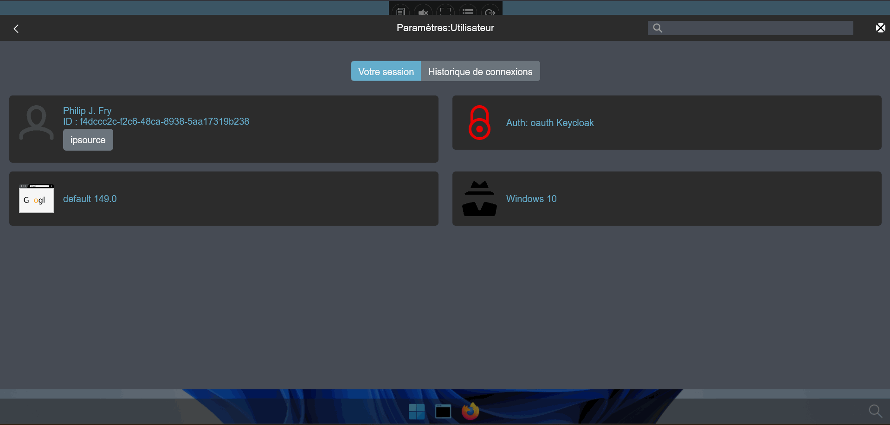
Great ! Now you can configure keycloak with external LDAP server for abcdesktop !